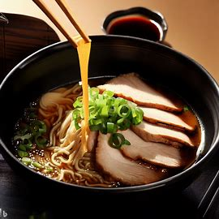

Ramen

Ramen is a popular Japanese noodle soup dish with a rich, savory broth,
tender noodles, and various toppings.
Ingredients
- 4 cups chicken or vegetable broth
- 2 cups water
- 1 tablespoon soy sauce
- 1 tablespoon miso paste
- 1 teaspoon sesame oil
- 2 cloves garlic, minced
- 1 teaspoon grated ginger
- 4 ounces dried ramen noodles
-
2 cups sliced vegetables (e.g., mushrooms, bok choy, spinach, or bean
sprouts)
- 2 soft-boiled eggs, halved
- 4 green onions, thinly sliced
- 1 cup cooked protein (e.g., sliced pork, chicken, or tofu)
- Optional toppings: sesame seeds, seaweed, corn, or chili oil
Steps
-
In a large pot, combine the chicken or vegetable broth, water, soy
sauce, miso paste, sesame oil, garlic, and ginger. Bring the mixture to
a boil over medium-high heat, then reduce the heat to low and let the
broth simmer for at least 10 minutes to develop the flavors.
-
In a separate pot, bring water to a boil and cook the ramen noodles
according to the package instructions. Drain and rinse the noodles under
cold water to stop the cooking process and remove any excess starch.
-
While the noodles are cooking, prepare the vegetables and protein.
Blanch the vegetables in boiling water or sauté them in a pan with a
little oil until tender. Heat the cooked protein in a pan or microwave
until warmed through.
-
To serve, divide the cooked noodles evenly among four bowls. Pour the
hot broth over the noodles, making sure each bowl has an equal amount of
broth.
-
Arrange the vegetables, protein, and soft-boiled eggs on top of the
noodles in each bowl. Garnish with green onions and any optional
toppings you desire.
-
Enjoy the ramen while it's hot, and feel free to adjust the flavors with
additional soy sauce, sesame oil, or chili oil, if desired.